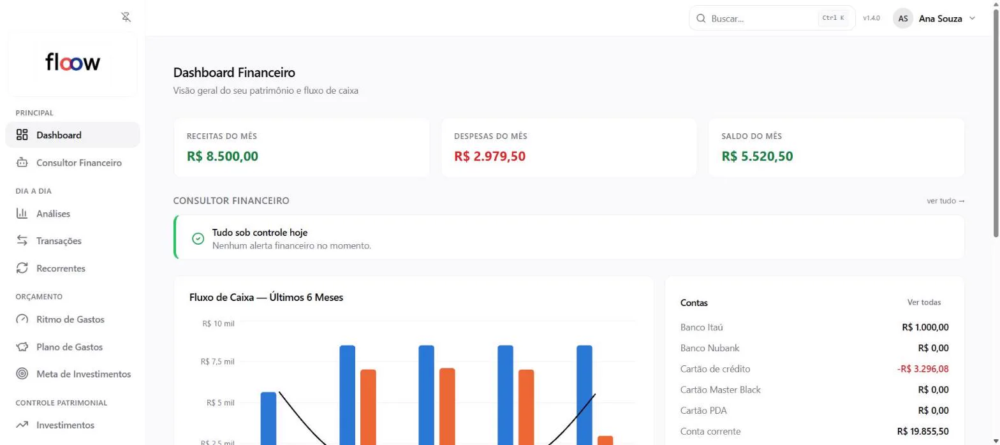
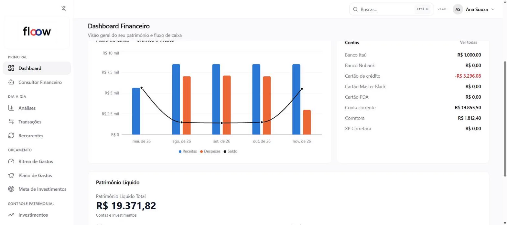
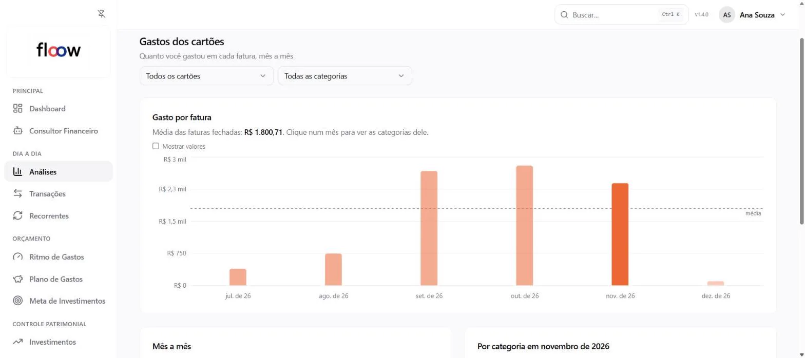
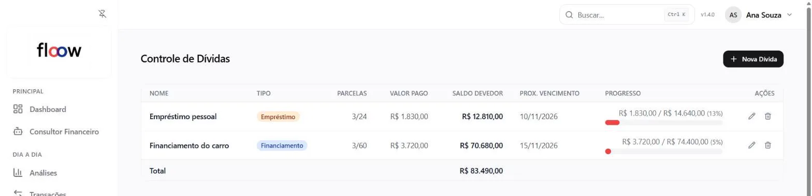
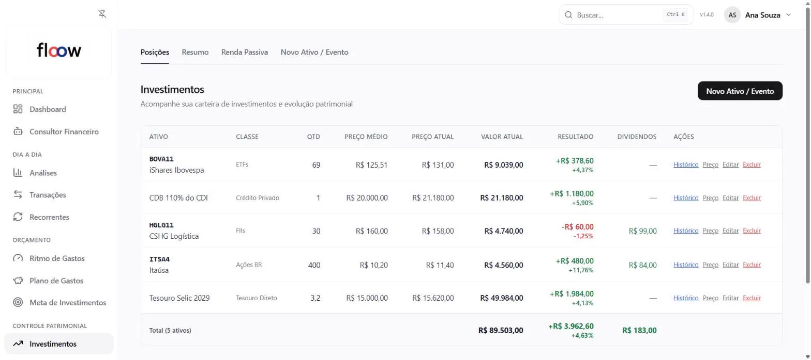
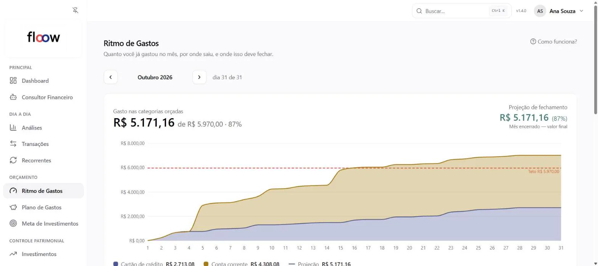
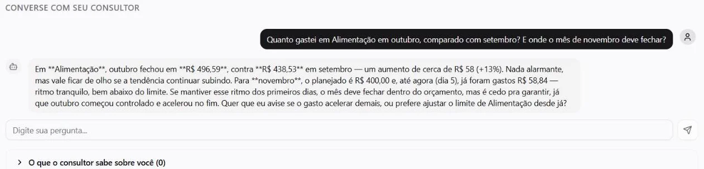

Saiba para onde vai cada real, sem lançar nada à mão.
Conecte seus bancos pelo Open Finance e o floow importa os lançamentos, separa cada gasto por categoria e avisa no WhatsApp o que vem a seguir.
30 dias do Pro grátis, sem cartão de crédito.

- Conexão pelo Open Finance, regulado pelo Banco Central
- Só leitura: o floow não movimenta o seu dinheiro
- Seus dados não são vendidos
Alguma dessas frases é sua?
“O salário entra e some.”
Cada gasto entra com categoria, e o resumo do mês mostra para onde foi o dinheiro.
“A fatura sempre assusta.”
O total de cada fechamento e as parcelas que ainda vêm aparecem antes do vencimento.
“Perdi a conta das parcelas e dos empréstimos.”
Cada dívida mostra quanto já foi pago e quanto falta, com os parcelados do cartão incluídos.
“Meus investimentos estão em vários bancos.”
A carteira e os seus bens aparecem somados, num patrimônio só.
Três passos e o mês se organiza sozinho.
Conecte
Autorize seus bancos pelo Open Finance, direto no app do banco. Prefere arquivo? Importe o extrato em OFX ou CSV.
O floow organiza
Os lançamentos chegam categorizados. Você corrige uma vez e a regra vale para os próximos parecidos.
Acompanhe e pergunte
Os avisos chegam no WhatsApp, e o consultor financeiro de IA responde com os seus números.
Conta, cartão, dívidas e investimentos no mesmo app.
Você sabe quanto tem e quanto ainda vai sair.
O saldo de cada conta e cartão ao lado do que entrou e saiu nos últimos meses, na mesma tela.

A fatura deixa de ser surpresa.
Cada fechamento mostra o total do mês, e as compras parceladas aparecem nas faturas que ainda vêm.

Empréstimo, financiamento e parcelado, com quanto falta.
Valor total, parcela, juros e quanto já foi pago em cada dívida. Os parcelados do cartão entram sem você cadastrar.

Investimentos e bens somados num patrimônio só.
Compras, vendas, dividendos e juros na carteira, ao lado de imóveis e veículos. Pelo Open Finance, as posições do banco chegam sozinhas.

Você vê onde o mês vai fechar antes de ele fechar.
O ritmo de gastos compara com o seu plano e avisa quando uma categoria está para estourar.

Pergunte ao seu consultor financeiro.
O consultor é uma inteligência artificial que lê as suas contas. Ele responde no app ou no WhatsApp e, todo dia, aponta o que mudou.

- Análises todo diaGastos fora do padrão, metas em risco e oportunidades, a partir dos seus dados.
- Resposta com os seus númerosPergunte quanto sobrou no mês ou se dá para antecipar uma meta. A resposta começa pelo número.
- Nada sem vocêQuando o consultor sugere uma ação, ela só acontece depois que você confirma.
Comece grátis. Assine quando fizer sentido.
Toda conta nova começa com 30 dias do Pro, sem cartão de crédito.
Free
R$ 0
Controle financeiro básico.
- Até 2 contas
- Lançamentos manuais
- Dashboard e fluxo de caixa
Pro
R$ 49,90/mês
Gestão financeira completa, com cobrança mensal.
- Contas ilimitadas
- Open Finance e importação de OFX/CSV
- Investimentos
- Planejamento e independência financeira
- Suporte prioritário
Cancele quando quiser, na tela de planos do app. Se você não assinar, a conta passa para o Free no fim dos 30 dias.
Como o floow protege os seus dados.
Você autoriza no seu banco
A conexão pelo Open Finance é aprovada no app do banco, e você encerra quando quiser.
Só leitura
O floow vê saldos e lançamentos. Ele não faz pagamentos nem transferências.
Criptografia
Seus dados trafegam e ficam guardados com criptografia.
Sem venda de dados
O floow segue a LGPD e não vende os seus dados.
Perguntas frequentes
Meu banco funciona?
O floow conecta pelo Open Finance com os bancos que participam do sistema regulado pelo Banco Central. Se o seu banco não aparecer na hora de conectar, dá para importar o extrato em OFX ou CSV.
O floow mexe no meu dinheiro?
Não. A conexão pelo Open Finance é só de leitura: o floow vê saldos e lançamentos, mas não faz pagamentos nem transferências.
O que acontece depois dos 30 dias?
Se você não assinar o Pro, a conta passa para o Free: até 2 contas e lançamentos manuais, sem importação, Open Finance, investimentos ou planejamento.
Posso cancelar quando quiser?
Pode. A assinatura é cancelada na tela de planos do app, a qualquer momento.
Preciso lançar tudo à mão?
Não. Pelo Open Finance os lançamentos entram sozinhos e já categorizados. Você corrige uma categoria quando quiser, e a correção vale para os próximos parecidos.
Como funcionam os avisos no WhatsApp?
Você autoriza o seu número na conta floow e passa a receber o resumo de ritmo e os avisos de vencimento. Dá para desligar a qualquer momento.
O consultor de IA é um consultor de verdade?
É uma inteligência artificial que lê os seus dados no floow. Ela explica gastos, aponta o que mudou e responde perguntas, mas não substitui um profissional certificado nem faz recomendação de investimento.
Tem app para celular?
O floow funciona no navegador, no computador e no celular, sem instalar nada.
Respire. O floow cuida do resto.
Crie sua conta em poucos minutos e veja o seu mês organizado.
Começar grátis 30 dias do Pro grátis, sem cartão de crédito.